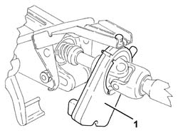
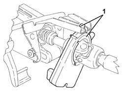

3350E20 steering angle sensor r r
- Path
- Procedures > 33 BRAKING SYSTEM > 3350 DRIVE CONTROL' > 3350E vehicle direction control system vdc > 3350E20 steering angle sensor r r
- Kind
- repair procedure (removal / refitting; the operation number is the code)
- Applies to
- all engines; all production periods
- Interactive page
- https://sloeber94.github.io/elrnDB-a147/en/#/3025269
Applies to: engines: 1.6 TS; all production periods; only with equipment: 120 CV
 Removing
Removing
 Refitting
RefittingProceed with removal 5580C18 air bag module - r+r .
Applies to: engines: 1.6 TS; all production periods; only with equipment: 120 CV
Proceed with removal 4110A11 steering wheel - r+r for replacement or check for versions with air bag .
Applies to: engines: 1.6 TS; all production periods; only with equipment: 120 CV
Proceed with removal 7040A26 steering column trim - r+r .
Proceed with removal 5550A12 complete stalk unit - r+r for versions with air bag .
Proceed with removal 4110A30 Steering control shaft SUPPORT - R.R. .
1. At the bench, withdraw and remove the steering angle sensor from the steering column.

Applies to: engines: 1.6 TS; all production periods; only with equipment: 120 CV
Refitting
Removing1. Refit the steering angle sensor in its seating on the steering column.

Applies to: engines: 1.6 TS; all production periods; only with equipment: 120 CV
Proceed with refitting 4110A30 Steering control shaft SUPPORT - R.R. .
Proceed with refitting 5550A12 complete stalk unit - r+r for versions with air bag .
Proceed with refitting 7040A26 steering column trim - r+r .
Applies to: engines: 1.6 TS; all production periods; only with equipment: 120 CV
Proceed with refitting 4110A11 steering wheel - r+r for replacement or check for versions with air bag .
Applies to: engines: 1.6 TS; all production periods; only with equipment: 120 CV
Proceed with refitting 5580C18 air bag module - r+r .
Using the Examiner, proceed with self-learning of the ABS control unit.
Applies to: engines: 2.0 TS; all production periods; only with equipment: Cambio robotizzato
Removing
RefittingProceed with removal 5580C18 air bag module - r+r .
Applies to: engines: 2.0 TS; all production periods; only with equipment: Cambio robotizzato
Proceed with removal 4110A16 steering wheel - r r for replacement or checks for versions with airbag and manual gearbox with hydraulic selection .
Applies to: engines: 2.0 TS; all production periods; only with equipment: Cambio robotizzato
Proceed with removal 7040A26 steering column trim - r+r .
Proceed with removal 5550A12 complete stalk unit - r+r for versions with air bag .
Proceed with removal 4110A30 Steering control shaft SUPPORT - R.R. .
1. At the bench, withdraw and remove the steering angle sensor from the steering column.
Applies to: engines: 2.0 TS; all production periods; only with equipment: Cambio robotizzato
Refitting
Removing1. Refit the steering angle sensor in its seating on the steering column.
Applies to: engines: 2.0 TS; all production periods; only with equipment: Cambio robotizzato
Proceed with refitting 4110A30 Steering control shaft SUPPORT - R.R. .
Proceed with refitting 5550A12 complete stalk unit - r+r for versions with air bag .
Proceed with refitting 7040A26 steering column trim - r+r .
Applies to: engines: 2.0 TS; all production periods; only with equipment: Cambio robotizzato
Proceed with refitting 4110A16 steering wheel - r r for replacement or checks for versions with airbag and manual gearbox with hydraulic selection .
Applies to: engines: 2.0 TS; all production periods; only with equipment: Cambio robotizzato
Proceed with refitting 5580C18 air bag module - r+r .
Using the Examiner, proceed with self-learning of the ABS control unit.
Applies to: all engines; production: da 04/01 a 06/02, da 07/02 a 02/03, da 03/03 a 09/03, da 10/03 a 01/04, da 02/04
.
Topics linked from this page (6)
- 4110A11 steering wheel - r+r for replacement or check for versions with air bag
- 4110A16 steering wheel - r r for replacement or checks for versions with airbag and manual gearbox with hydraulic selection
- 4110A30 Steering control shaft SUPPORT - R.R.
- 5550A12 complete stalk unit - r+r for versions with air bag
- 5580C18 air bag module - r+r
- 7040A26 steering column trim - r+r